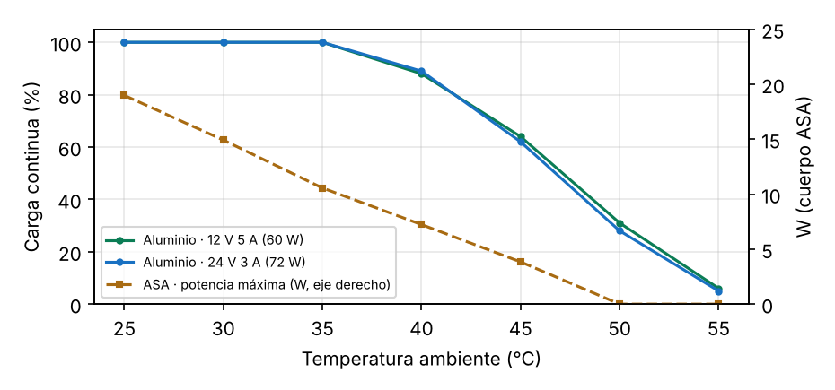

Seguridad. El cubo con cartucho se conecta a 100–240 V~. La instalación de ese lado debe hacerla personal
calificado, con la alimentación desconectada y con un interruptor o protección en el circuito. No abras el cubo energizado. No lo uses con
el empaque dañado o las tapas flojas si está a la intemperie. Usa cable adecuado a la corriente de tu tira.
1. Contenido
Cubo AP con cartucho de alimentación y tarjeta de configuración instalados (o Nodo AP).
Etiqueta con el nombre del equipo y el PIN de Bluetooth de 6 dígitos. Consérvala.
Este manual y la póliza de garantía.
2. Conoce tu Cubo AP
Tarjeta de configuración: fija el voltaje y la corriente máximos para tu tira. La app puede bajar el voltaje, nunca subirlo.
Pide la tarjeta que corresponda a tu tira (5, 12, 15 o 24 V).
LED de estado (tubo de luz de la tapa): latido corto = en espera · encendido con un parpadeo cada 2 s = luz encendida y conectado ·
fijo = luz encendida sin app · destellos en serie = aviso (tabla de la sección 8).
3. Instalación
Fija el cubo con 2 tornillos M4 por las orejas. Deja los prensaestopas hacia abajo o hacia los lados, nunca hacia arriba en exteriores.
Pasa el cable de alimentación por el prensaestopas izquierdo y el de la tira por el derecho. Usa cable redondo de 4–8 mm para que selle.
Alimentación: con cartucho, fase y neutro a la bornera del cartucho (y tierra si aplica). Sin cartucho, 12–36 V⎓ a la bornera de entrada
(+ y −), al menos 1.2 V arriba del voltaje de tu tira.
Tira analógica (ánodo común): V+ al común de la tira y R, G, B, WW, CW a cada color. Tira direccionable: V+, DAT y GND.
DMX por cable (opcional): GND · D− · D+ (pines 1 · 2 · 3 del XLR).
Aprieta los prensaestopas, revisa que el empaque esté en su ranura y cierra la tapa apretando los 4 tornillos en cruz y parejo.
Calibre mínimo de cable para la tira: hasta 2 A, 0.75 mm² (18 AWG) · hasta 5 A, 1.5 mm² (16 AWG) · tramos de más de 5 m, un calibre mayor.
Una tira de 12 V larga pierde voltaje al final: aliméntala por ambos extremos.
4. Primer encendido y app
Energiza: el LED da un latido cada 2 s.
Abre la app AP (sitio web, sección Cubo AP) en Chrome o Edge y pulsa Conectar Bluetooth; elige tu cubo y escribe el PIN de la etiqueta.
Pulsa el círculo de encendido. Elige el tipo de tira en la pestaña Tira y voltaje.
Con Demo puedes probar la app sin cubo.
5. Funciones
Función
Cómo
Brillo, color y blanco
Pestaña Luz. En tiras CCT, temperatura de 2700 a 6500 K.
Efectos
Fijo, Respira, Arcoíris, Fuego y Cometa.
Escenas
Guarda hasta 8 combinaciones de color, brillo y efecto, y recupéralas con un toque.
Horario diario
Hora de encendido y apagado. Con Wi-Fi el cubo toma la hora de internet.
Voltaje de salida
Bájalo un poco (p. ej. 11.5 V en tiras de 12 V): la tira se calienta menos y dura más.
Wi-Fi
Pestaña Red y hogar: red de 2.4 GHz y contraseña. Luego hay una página de control en la red local.
Grupos
Mismo nombre y clave de grupo en varios cubos; con «Aplicar a todo el grupo» se mueven juntos.
Hogar inteligente
Versión estándar: WLED, Home Assistant y Alexa. Versión Matter: pulsa Código y en Apple Home, Google Home o Alexa elige
«Agregar accesorio» → «Más opciones» y escribe el código (mismo Wi-Fi).
Actualizaciones
Por Wi-Fi desde la app (versión estándar) o por USB con el instalador del sitio. Durante la actualización la salida se apaga.
6. DMX e iluminación profesional
Recibir: pestaña DMX: Art-Net o sACN (universo y dirección) por Wi-Fi, o DMX512 por cable (dirección).
Transmitir a Nodos AP (cubos con salida DMX): Espejo hace que todos los nodos copien el color del cubo; Puente reenvía al cable lo que llega por Art-Net/sACN.
Línea DMX: cable de par trenzado, de equipo a equipo (sin derivaciones en estrella), terminación de 120 Ω solo en el último.
7. Nodo AP
Conecta 12–24 V a la bornera de entrada, la tira RGBW (V+ R G B W) a la de salida y la línea DMX a la bornera DMX de entrada; la de salida sigue al siguiente nodo.
Asignar dirección: pulsa APRENDER (el LED destella rápido). En la consola, sube un solo canal a más del 80 % y deja los demás abajo del 15 %.
El nodo toma ese canal como su dirección y usa ese y los 3 siguientes (R, G, B, W). Con un Cubo AP en modo Espejo usa las direcciones 1, 5, 9, 13…
LED: fijo = recibe · un destello por segundo = sin señal (mantiene la última luz) · rápido = aprendiendo.
Puente TERM: ponlo solo en el último nodo de la línea.
8. Avisos del LED (Cubo AP)
LED
Significa
Qué hacer
1 destello
Sin tarjeta de configuración o mal insertada
Apaga, inserta la tarjeta hasta el fondo y enciende.
2 destellos
La tarjeta no coincide con el voltaje medido
Verifica que la tarjeta sea la de tu tira; si persiste, servicio.
3 destellos
Sobrecorriente
La tira pide más de lo que permite la tarjeta: baja el brillo, acorta la tira o usa una tarjeta mayor.
4 destellos
Temperatura alta: se apagó para protegerse
Revisa ventilación y sol directo; vuelve solo al enfriarse.
5 destellos
Voltaje de entrada insuficiente
Revisa la alimentación y que el cartucho sea el indicado para tu tarjeta.
6 destellos
Corto en la salida
Desconecta la tira y revisa cables y conectores; el cubo reintenta solo.
Desde la app, Reiniciar borra el aviso. Por sobrecorriente o corto el cubo reintenta solo 3 veces, cada 5 s.
9. Calor y carga máxima
El cubo saca su calor por las paredes. Con más temperatura ambiente, menos carga continua:

Cuerpo ASA (plástico): hasta ≈ 15 W continuos a 30 °C. Para más, cuerpo de aluminio.
Cuerpo de aluminio: 100 % hasta 35 °C; menos arriba de eso, según la curva.
Si se excede, el cubo baja el brillo solo y lo recupera al enfriarse: no es falla.
No lo encierres en cajas sin ventilación ni lo cubras. Al sol, prefiere el acabado claro.
10. Solución de problemas
Síntoma
Qué revisar
No aparece en la app
Usa Chrome o Edge en Android, Windows o macOS con Bluetooth activo; acércate a menos de 10 m. iPhone y iPad no tienen Bluetooth web: la primera configuración del Wi-Fi se hace desde Android o una computadora; después se usa la página por Wi-Fi o Matter.
Pide un PIN
Es el número de 6 dígitos de la etiqueta del cubo.
La tira enciende con colores cambiados
Elige el tipo de tira correcto en la app o intercambia los cables de color en la bornera.
Brilla menos de lo esperado
Revisa el estado térmico en la app: con calor el cubo baja el brillo para protegerse. Revisa también el voltaje de salida.
Parpadea en video
Normal en tiras direccionables con brillo bajo; las analógicas usan 19 kHz y no parpadean.
No toma el Wi-Fi
Solo redes de 2.4 GHz; escribe el nombre sin espacios. Acerca el router o reorienta la antena.
DMX: la luz no responde
Revisa dirección y universo, la polaridad D+/D− y que solo el último equipo tenga terminación.
Nodo AP: el LED destella una vez por segundo
No recibe DMX: revisa el cable, la polaridad y que el maestro esté transmitiendo.
11. Mantenimiento
Limpia con paño húmedo; sin solventes ni hidrolavadora a presión directa.
Cada año en exteriores: revisa que los prensaestopas y la tapa sigan apretados y el empaque sin grietas.
Por dentro no hay piezas que el usuario deba reparar. Abrirlo o modificarlo anula la garantía.
12. Fin de vida
No lo tires a la basura: llévalo a un centro de acopio de residuos electrónicos.
13. Soporte
[Razón social del fabricante o importador] · [Teléfono de soporte] · [Correo de soporte] · [Sitio web]
AP · MU-AP · v0.9 (preliminar) · Los datos pueden cambiar sin aviso mientras el producto esté en desarrollo.